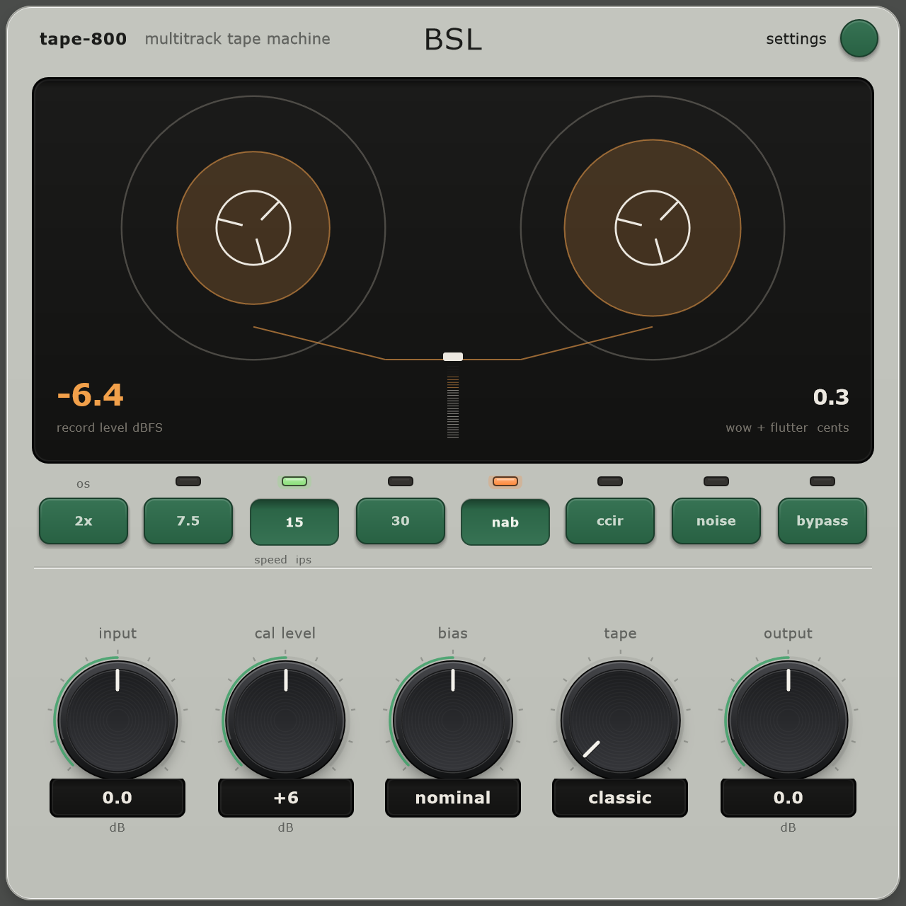

Ovrtone– a DAW with 35 analog classics in the box
A Logic-style arrangement and mixer, FL Studio's piano roll and channel rack, and spatial mixing. Bring your own VST3 and CLAP plugins and samples; Ovrtone is the host.


Walk in
Pick a room
35 analog plugins
Compressors, EQs, consoles, tape, reverbs, echoes and saturators. Included with Ovrtone, usable in any DAW.
Browse the shelf →What's new & features
Tuner, Fit All Audio to Tempo, reworked spatial, a better Piano Roll and Channel Rack, and everything else Ovrtone does.
See the features →Download Ovrtone
One installer with everything inside: Ovrtone, the Stem Splitter model and the 35 BSL Classics.
Get the installer →See it in action
Arrange, write, mixArrange
Tracks, folders and takes in a Logic-style arrangement. Press T for the tool menu, swipe across passes to comp.
Piano Roll & Channel Rack
FL-style patterns and a Piano Roll that plays every note you draw.
Mix with the classics
Sends, groups, an EQ slot on every strip, and 35 analog plugins one click away.
Spatial
A 7.1.2 bed and objects, rendered to headphones or speakers, exported as ADM BW64.
Tuner & extras
A real-time tuner, your presets in the browser, and a one-shot export for your beat store.